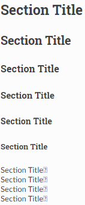
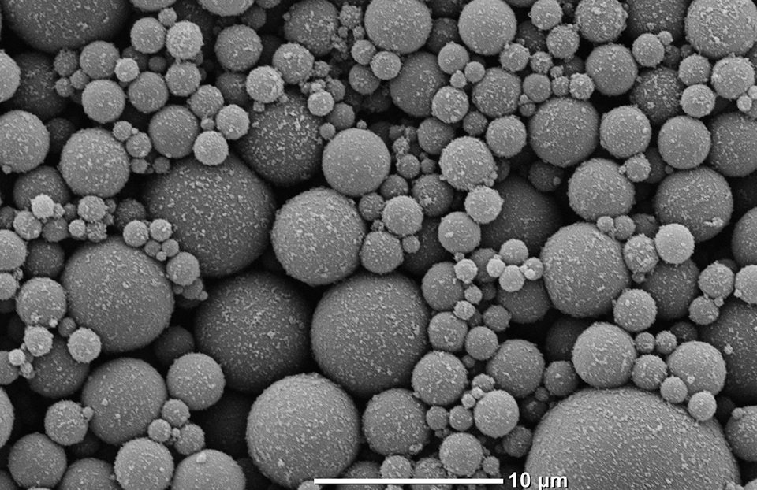

ReStructuredText 문법#
Sphinx는 ReStructuredText 로 작성된 파일의 관리를 도와주는
Python 기반의 도구입니다. 즉 문서 작성 자체는 ReStructuredText 로
작성하여야 합니다. Markdown을 사용해보신 분들은 Markdown과 유사하다고
생각하시면 됩니다.
ReStructuredText 의 기능을 모두 설명할 수는 없으니 기본적인 문서 작성에
필요한 기능 위주로 설명하도록 하겠습니다. 모든 기능은
공식 문서
에서 확인하실 수 있습니다. 실시간 프리뷰를 사용하여 작성하면서 따라해보세요.
1. 문단 구분#
문단 구분은 엔터 2번으로 할 수 있습니다. 엔터가 하나인 경우는 스페이스로 인식 합니다.
Input:
나는
엔터가
좋다.
새로운 문단 시작.
Output:
나는 엔터가 좋다.
새로운 문단 시작.
2. 섹션 구분#
Input:
===============
Section Title
===============
---------------
Section Title
---------------
Section Title
=============
Section Title
-------------
Section Title
`````````````
Section Title
'''''''''''''
Section Title
.............
Section Title
~~~~~~~~~~~~~
Section Title
*************
Section Title
+++++++++++++
Section Title
^^^^^^^^^^^^^
Output:
Tip
섹션 텍스트의 크기는 문서 내부에서 상대적인 우선 순위만 비교합니다. 예를 들어 다음 두 문서는 동일하게 작동합니다.
Code 1:
.. 가장 큰 == 두 줄이 가장 큰 섹션 크기로 설정 됨.
.. 그 다음으로 큰 섹션인 == 한 줄이 다음 크기로 설정 됨.
==============
Section Title
==============
Section Title
==============
Code 2:
.. 가장 큰 == 한 줄이 가장 큰 섹션 크기로 설정 됨.
.. 그 다음으로 큰 섹션인 `` 한 줄이 다음 크기로 설정 됨.
Section Title
==============
Section Title
``````````````
1. 문자 스타일#
Input:
*기울이기* 옆에는 스페이스로 비워두기 붙혀서 작성하면 에러
**볼드** 옆에는 스페이스로 비워두기 붙혀서 작성하면 에러
``코드`` 옆에는 스페이스로 비워두기 붙혀서 작성하면 에러
Output:
기울이기 옆에는 스페이스로 비워두기 붙혀서 작성하면 에러
볼드 옆에는 스페이스로 비워두기 붙혀서 작성하면 에러
코드 옆에는 스페이스로 비워두기 붙혀서 작성하면 에러
4. 리스트#
예시 속 | 는 line break입니다.
Input:
* 하나
* 새로운 계층
* 둘
* 셋
1. 하나
2. 둘
3. 셋
|
#. 하나
#. 둘
#. 셋
Output:
하나
새로운 계층
둘
셋
하나
둘
셋
하나
둘
셋
Tip
계층 사이에는 엔터가 필요합니다.
5. 이미지#
Input:
.. image:: _static/test_image.jpg
Output:
Important
Directives: 이미지에서 사용한 것 처럼 .. 명령어:: 형태의 구문을
directives라고 부릅니다. 일반적으론 다음과 같은 형태를 가집니다.
.. 명령어:: 인자1, 인자2, .., 인자N
:옵션1: 값1
:옵션2: 값2-1,값2-1
컨텐트 값
예를 들어 위의 이미지 임포트의 설정을 다음과 같이 바꿀 수 있습니다.
Input:
.. image:: _static/test_image.jpg
:align: center
:scale: 30 %
Output:
{kind=link}
위 directive의 경우 컨텐트 값이 필요 없습니다. 컨텐트 값이 필요한 경우는 코드 예시를 들 수 있습니다. 다음과 같은 코드는 C++ 예시 코드 블락을 생성합니다.
Input:
.. code-block:: c++
:linenos:
cout << "Hello World!" << endl;
Output:
1cout << "Hello World!" << endl;
이렇게 directives의 구조를 알고 문서를 읽으면 더 쉽게 이해할 수 있습니다.
6. 수식#
수식은 \(LaTeX\) 문법으로 작성합니다.
Input:
.. math::
a^2 + b^2 = c^2
Output:
인라인 수식은 다음과 같이 나타냅니다.
Input:
:math:`e^{i\pi} - 1 = 0` 은 가장 아름다운 공식으로 알려져있다.
Output:
\(e^{i\pi} - 1 = 0\) 은 가장 아름다운 공식으로 알려져있다.
7. 주석#
Input:
.. 주석 한 라인
..
주석 멀티 라인
두 줄 짜리 주석 작성하기.
Output:
아웃풋은 안 보이는 게 정상입니다.
8. 테이블#
Input:
.. table::
+------------------------+------------+----------+----------+
| Header row, column 1 | Header 2 | Header 3 | Header 4 |
| (header rows optional) | | | |
+========================+============+==========+==========+
| body row 1, column 1 | column 2 | column 3 | column 4 |
+------------------------+------------+----------+----------+
| body row 2 | Cells may span columns. |
+------------------------+------------+---------------------+
| body row 3 | Cells may | - Table cells |
+------------------------+ span rows. | - contain |
| body row 4 | | - body elements. |
+------------------------+------------+---------------------+
Output:
Header row, column 1 (header rows optional) |
Header 2 |
Header 3 |
Header 4 |
|---|---|---|---|
body row 1, column 1 |
column 2 |
column 3 |
column 4 |
body row 2 |
Cells may span columns. |
||
body row 3 |
Cells may span rows. |
|
|
body row 4 |
|||
테이블을 작성하는 여러가지 방법 이 있습니다. 위의 방법이 가장 번거롭지만 디테일하게 작성하는 방법입니다.
간단한 테이블의 경우 csv 스타일로도 작성할 수 있습니다.
Input:
.. csv-table:: Table from csv format
:header-rows: 1
:widths: 15, 10, 30
head 1,head 2,head 3
1,2,3
4,,5
Output:
head 1 |
head 2 |
head 3 |
|---|---|---|
1 |
2 |
3 |
4 |
5 |
만약 data.csv 에 다음과 같이 데이터가 저장되어 있다면
head 1,head 2,head 3
1,2,3
다음과 같은 코드로 테이블을 작성할 수 있습니다.
.. csv-table:: Table from csv format
:header-rows: 1
:widths: 15, 10, 30
:file: data.csv
9. 코드 블락#
Input:
.. code-block::
import sys
print('Hello World!')
Output:
import sys
print('Hello World!')
기본값은 파이썬이지만 다양한 언어를 지원합니다.
Input:
.. code-block:: r
# take input from the user
num = as.integer(readline(prompt="Enter a number: "))
factorial = 1
# check is the number is negative, positive or zero
if(num < 0) {
print("Sorry, factorial does not exist for negative numbers")
} else if(num == 0) {
print("The factorial of 0 is 1")
} else {
for(i in 1:num) {
factorial = factorial * i
}
print(paste("The factorial of", num ,"is",factorial))
}
Output:
# take input from the user
num = as.integer(readline(prompt="Enter a number: "))
factorial = 1
# check is the number is negative, positive or zero
if(num < 0) {
print("Sorry, factorial does not exist for negative numbers")
} else if(num == 0) {
print("The factorial of 0 is 1")
} else {
for(i in 1:num) {
factorial = factorial * i
}
print(paste("The factorial of", num ,"is",factorial))
}
Interacive 셀 예시는 >>> 와 함께 작성합니다
Input:
상호작용 셀 예시는 다음과 같이 작성::
>>> 1 + 1
2
Output:
상호작용 셀 예시는 다음과 같이 작성:
>>> 1 + 1
2
10. 강조 표시#
다음과 같은 강조 표시가 지원됩니다.
attentioncautiondangererrorhintimportantnotetipwarningadmonition
강조 표시는 다음과 같이 할 수 있습니다.
Input:
.. important::
중요
.. note::
노트
.. tip::
팁
.. warning::
조심
.. admonition:: 나만의 꿀팁
은 없습니다.
Output:
Important
중요
Note
노트
Tip
팁
Warning
조심
나만의 꿀팁
은 없습니다.